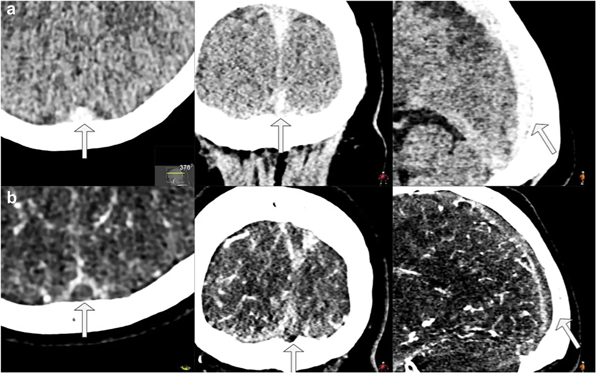
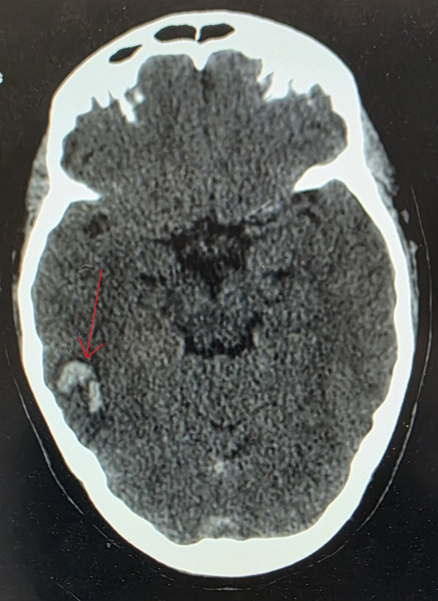
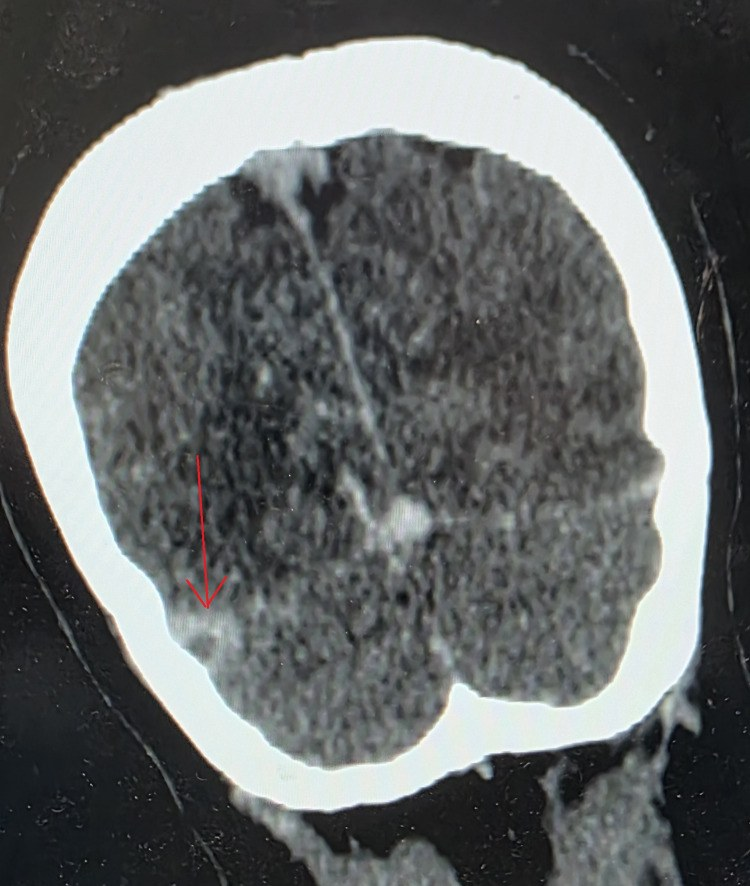
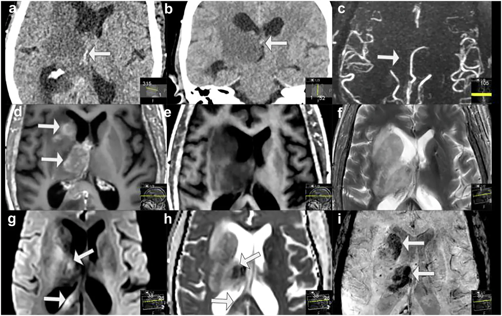

1948 — Co giật & động kinh sau huyết khối xoang tĩnh mạch não / Seizures and post-CVST epilepsy
Tags: pattern:co-giat pattern:nhoi-mau-tinh-mach pattern:co-dac-mau pattern:xuat-huyet-nao pattern:khuyet-dong-chay vung:nao vung:vo-nao vung:xoang-tinh-mach protocol:NCCT protocol:CTV protocol:MRV protocol:MRI-nao score:ILAE-2017 score:mRS
Mức chắc chắn (certainty): tổng hợp y văn (literature synthesis) — một tổng quan hệ thống 63 bài về co giật trong CVST (PMC6119760), ba đoàn hệ hồi cứu (69 ca, PMC5756278; 80 ca, PMC9865306; đa trung tâm 2025, PMC12033526), hai tổng quan hệ thống 2022–2025 về cơn muộn (PMC9153875; PMC12394382) và một tổng quan hình ảnh theo vị trí giải phẫu 2026 (PMC13588991). Không có thử nghiệm ngẫu nhiên về dự phòng bằng thuốc chống động kinh (ASM) trong CVST — mọi khuyến cáo điều trị đều là ý kiến chuyên gia/thực hành đồng thuận, được ghi rõ tại mục (4).
Câu chốt: co giật là mặt khởi phát thường gặp của CVST (35–50% tổng quát, tới 76% thể chu sinh) nhưng KHÔNG phải một bệnh động kinh: cơn trong 7 ngày đầu là cơn triệu chứng cấp (acute symptomatic seizure, ASyS) do não đang bị tổn thương cấp, còn cơn sau 7 ngày mới là động kinh sau CVST (post-CVST epilepsy, PCE) và có nguy cơ tái phát cao. Ba số quyết định: (1) tổn thương xuất huyết/nhồi máu xuất huyết là yếu tố dự báo mạnh nhất — OR 6,05 (PMC9865306); (2) khuyết thần kinh khu trú OR 5,16, huyết khối xoang dọc trên 65,6% vs 40,5% (PMC5756278); (3) trạng thái động kinh làm tử vong tăng 44% vs 5,6% (PMC12033526). Điều trị: không dự phòng tiên phát cho mọi bệnh nhân; khởi động ASM sau cơn đầu khi có tổn thương trên lều/khuyết thần kinh khu trú, và không trì hoãn kháng đông vì có xuất huyết.
1. Tổng quan bệnh học – cơ chế hình ảnh (TẠI SAO)
1.1 Vì sao huyết khối tĩnh mạch gây co giật — chuỗi ba bước
- Bước 1 — ứ huyết áp lực cao: xoang màng cứng không có van, dòng chảy chậm và không đập. Tắc xoang dọc trên hoặc tĩnh mạch vỏ làm áp lực mao mạch–tĩnh mạch tăng, gradient lọc tăng → dịch và hồng cầu thoát vào mô não. Đây là lý do tổn thương không theo lãnh thổ động mạch: hay gặp cạnh đường giữa hai bên (parasagittal) ở huyết khối xoang dọc trên, và thùy thái dương/đỉnh khi tắc xoang ngang–xích-ma.
- Bước 2 — hàng rào máu–não vỡ: phù mạch (vasogenic) rồi phù độc tế bào (cytotoxic) → DWI sáng/ADC tối ở vùng nhồi máu, FLAIR tăng lan theo vỏ. Tổn thương vỏ trực tiếp lên vùng vận động–cảm giác (trán sau, đỉnh) là nơi dễ phát cơn nhất — phù hợp với dữ liệu: thùy trán 31,3% vs 10,8%, thùy thái dương 43,8% vs 8,1% ở nhóm có cơn (PMC5756278).
- Bước 3 — máu và sản phẩm giáng hóa: khi có nhồi máu xuất huyết, hemosiderin/iron và hemoglobin thoái giáng là chất kích thích vỏ não và gây động kinh đã biết từ xuất huyết não; đây là lý do xuất huyết là yếu tố dự báo mạnh nhất (OR 6,05; PMC9865306). Trên SWI, các vi chảy máu vỏ và tĩnh mạch tủy xoắn ốc giãn (corkscrew medullary veins) là dấu hiệu ứ tĩnh mạch nặng (PMC13588991).
- Vì sao cắt mốc 7 ngày: đây là quy ước vận hành của ILAE (2017) cho cơn triệu chứng cấp sau tổn thương não cấp, không phải ranh giới sinh học tuyệt đối. Hệ quả thực hành: cơn ngày 2–7 tệ hơn cơn ngày 1 (OR 3,3 cho mRS 90 ngày xấu; PMC12033526), và cơn sau 7 ngày là yếu tố dự báo tái phát mạnh nhất.
1.2 Dịch tễ định lượng — không phải "hiếm gặp"
- CVST chiếm 0,5–1% đột quỵ, 3–4/1.000.000 người lớn/năm; nữ nhiều hơn, tuổi 20–40 (PMC5756278).
- Cơn triệu chứng cấp: 6,9–76% giữa các nghiên cứu; giá trị hay gặp 35–50%, 60% ở CVST nặng, 76% ở CVST chu sinh (PMC6119760).
- Động kinh sau CVST: 4–16%; ISCVT 11% (36 ca ở 6 tháng, 55 ca ở 1 năm, 66 ca ở 2 năm) — tức phần lớn xuất hiện trong năm đầu (PMC6119760). Tổng quan 2025 ghi ~10% trong 2 năm với nguy cơ tái phát cao (PMC12394382).
- Cơn đầu tiên là biểu hiện khởi phát ở khoảng 29% bệnh nhân, trong đó 59% là cơn toàn thể (Sidhom, dẫn qua PMC5756278).
- Tiên lượng: trong đoàn hệ 69 ca, tử vong 9,38% vs 5,41% và kết cục tốt 90 ngày 81,25% vs 86,47% — khác biệt KHÔNG có ý nghĩa (p = 0,469 và 0,793) (PMC5756278). Nghĩa là: bản thân cơn không quyết định tiên lượng; tổn thương nền và trạng thái động kinh mới quyết định.
1.3 Đọc hình ảnh theo cơ chế — dấu trực tiếp và gián tiếp
- Dấu trực tiếp trên NCCT: tăng đậm độ trong lòng xoang ("dense cord sign" khi thấy trên lát cắt dọc xoang) — huyết khối cấp 50–80 HU, so với máu tĩnh mạch bình thường ~35–45 HU. Độ nhạy thấp với huyết khối nhỏ và phụ thuộc cửa sổ, nên NCCT bình thường KHÔNG loại trừ (PMC13588991).
- CTV: khuyết thuốc trong lòng xoang, và dấu "empty delta sign" — thành xoang ngấm thuốc bao quanh huyết khối không ngấm; thấy rõ nhất ở xoang dọc trên trên lát trục/vành. Dấu này có thể âm ở giai đoạn rất sớm và dương giả khi có hạt nhện (arachnoid granulation) to, dòng chảy chậm, hoặc giả ảnh dòng chảy (PMC13588991).
- MRI — vì sao T1 sáng: hemoglobin thoái giáng thành methemoglobin nội bào ở máu bán cấp sớm → T1 tăng tín hiệu trong lòng xoang/tĩnh mạch vỏ, T2 có thể tối; ở bán cấp muộn methemoglobin ngoại bào → T1 và T2 đều sáng. Mất flow void bình thường là dấu gián tiếp. T1 hyperintense cortical vein là dấu chốt của huyết khối tĩnh mạch vỏ đơn độc — thể dễ bị bỏ sót nhất (PMC13588991, Hình 11).
- DWI/ADC: nhồi máu tĩnh mạch hạn chế khuếch tán nhưng có thể hồi phục nếu tái thông — khác nhồi máu động mạch đã hoại tử; vì vậy đừng dùng ADC để "chốt tử vong mô" như trong đột quỵ động mạch.
- SWI/T2*: vi chảy máu vỏ, tĩnh mạch giãn xoắn ốc, huyết khối trong xoang tối — nhạy nhất với thành phần xuất huyết, đúng với yếu tố dự báo cơn mạnh nhất (PMC13588991, PMC9865306).
2. Mẫu hình + chẩn đoán phân biệt theo vị trí (gamut)
- Cơn + nhồi máu hai bên cạnh đường giữa, có/xuất huyết: nghĩ huyết khối xoang dọc trên (nguyên nhân hay gặp nhất của cơn); phân biệt nhồi máu động mạch não trước hai bên (hiếm), PRES, di căn/glôcôm.
- Cơn + tổn thương thùy thái dương/đỉnh một bên, có xuất huyết: nghĩ huyết khối xoang ngang–xích-ma (thường kèm đau tai, viêm tai giữa) hoặc huyết khối tĩnh mạch vỏ; phân biệt nhồi máu động mạch não giữa, viêm não herpes, u não chảy máu.
- Cơn + tổn thương đồi thị hai bên: nghĩ huyết khối tĩnh mạch não trong (internal cerebral vein); phân biệt nhồi máu động mạch thân nền (artery of Percheron), bệnh não Wernicke, u não hai đồi thị.
- Cơn + đau đầu dữ dội + thiếu máu cục bộ thùy chẩm: nghĩ huyết khối xoang ngang phải/trái lan tĩnh mạch Labbé; phân biệt PRES, đột quỵ động mạch não sau, migraine có aura.
- Cơn + sốt + cứng gáy: phải loại viêm màng não trước khi quy cho CVST — hai bệnh có thể cùng tồn tại (viêm màng não → CVST), và chọc dòng không làm tăng nguy cơ tụt não nếu không có khối lớn.
- Gợi nhớ theo vị trí – cơ chế "SEIZURE": Sagittal sinus (dọc trên), Extra-axial (vị trí sát xương dễ bỏ sót), Intraparenchymal hemorrhage, Zygomatic/otitic source (viêm tai), Underlying thrombophilia, Recurrent late seizure (động kinh), Encephalopathy/status.
3. Bảng so sánh phân biệt (ma trận đối chiếu)
| Thực thể (entity) | Hình ảnh điển hình | Chốt vào (rule-in) | Chốt loại (rule-out) | Gợi ý xác nhận |
|---|---|---|---|---|
| ASyS trong CVST (≤ 7 ngày) | Khuyết thuốc xoang trên CTV/MRV + nhồi máu vỏ cạnh đường giữa ± xuất huyết; T1 sáng trong xoang | Khuyết thuốc trong xoang/tĩnh mạch vỏ + cơn trong 7 ngày | CTV/MRV bình thường hoàn toàn + không tổn thương vỏ → tìm nguyên nhân khác | CTV hoặc MRI + MRV bắt buộc, không chỉ NCCT |
| Động kinh sau CVST (PCE, > 7 ngày) | Ổ gliosis + hemosiderin (SWI tối) ở vùng nhồi máu cũ, teo vỏ khu trú | Cơn không do yếu tố cấp + ổ tổn thương cũ trên MRI | Cơn do rối loạn điện giải/thuốc/nhiễm trùng cấp → cơn triệu chứng cấp | EEG + MRI có SWI; theo dõi ≥ 1 năm |
| Trạng thái động kinh (status epilepticus) | Cơn ≥ 5 phút hoặc nhiều cơn không hồi phục; phù vỏ/DWI sáng lan sau cơn dài | Cơn kéo dài/kẹp ≥ 5 phút; EEG có hoạt động liên tục | Cơn co giật đơn độc < 5 phút | EEG khẩn; tử vong 44% vs 5,6% |
| Nhồi máu động mạch | Tổn thương theo lãnh thổ mạch, bờ thẳng, vỏ + dưới vỏ, không tăng đậm độ xoang | Theo lãnh thổ + mạch não bình thường trên CTA/MRA | Tổn thương cạnh đường giữa hai bên + khuyết thuốc xoang → CVST | CTA/MRA; không thay thế CTV |
| PRES / sản giật | Phù FLAIR hai bên chẩm–đỉnh, hồi phục, thường không xuất huyết lớn | Phù đối xứng vùng sau + huyết áp cao/thai | Khuyết thuốc xoang + nhồi máu có xuất huyết một bên → CVST | MRI; loại CVST bằng MRV (hai bệnh có thể phối hợp) |
| Viêm màng não | Ngấm màng não, ứ mủ rãnh, có thể giãn não thất; có thể kèm CVST | DNT: tế bào tăng, protein tăng, cấy/PCR dương | DNT bình thường + khuyết thuốc xoang → CVST đơn thuần | Chọc dòng; không trì hoãn kháng sinh |
| Tụ máu dưới màng cứng cấp | Hình liềm, vắt qua đường khớp sọ, không theo lãnh thổ | Hình liềm + xoang bình thường | Tổn thương trong nhu mô + khuyết thuốc xoang → CVST | CT xương; theo dõi |
| Liệt Todd sau cơn | Không có tổn thương mới tương ứng; hồi phục trong 24–48 giờ | Yếu sau cơn, hồi phục nhanh, hình ảnh không tương xứng | Khuyết thuốc xoang/mới trên DWI → CVST có nhồi máu thật | Chụp lại; 54,7% cơn có liệt Todd |
Dấu hiệu lâm sàng – hình ảnh phối hợp
- Không đau đầu lại là dấu hiệu nguy cơ cơn: cơn gặp 58% ở người không đau đầu vs 32% ở người có đau đầu (PMC6119760) — bệnh nhân "chỉ co giật, không đau đầu" dễ bị chẩn đoán động kinh nguyên phát và bỏ sót CVST.
- Tăng áp nội sọ đơn thuần (đau đầu + phù gai, không khuyết thần kinh) có nguy cơ cơn < 3% (ISCVT, dẫn qua PMC6119760); huyết khối xoang ngang đơn độc có cơn 16% vs 47% khi tổn thương lan rộng (Damak, dẫn qua PMC6119760).
- D-dimer cao liên quan đến cơn triệu chứng cấp; heparin và thời điểm kháng đông KHÔNG làm thay đổi tỉ lệ cơn (PMC6119760) — tức không dùng kháng đông để "phòng cơn" và không ngừng kháng đông vì đã có cơn.
4. Protocol chụp + phân tầng và quyết định ASM
4.1 Protocol
- Bước 1 — NCCT không cản quang: tìm tăng đậm độ xoang/tĩnh mạch vỏ, xuất huyết, nhồi máu; không dùng NCCT bình thường để loại trừ.
- Bước 2 — CTV xoang (hoặc MRV): lát ≤ 1 mm, tái tạo MPR theo trục xoang dọc trên và xoang ngang hai bên; đọc khuyết thuốc + empty delta sign. Với MRI: T1 3D trước/sau tiêm + T2 + FLAIR + SWI + DWI/ADC + MRV (TOF hoặc phase-contrast).
- Bước 3 — đánh giá nhu mô: đo vị trí/kích thước nhồi máu, có xuất huyết không, có phù lan gây chèn ép không, có tụ máu dưới màng cứng (dấu hiệu nặng, liên quan cơn muộn).
- Bước 4 — EEG: chỉ định khi cơn không rõ ràng, cơn kéo dài, rối loạn ý thức không giải thích, hoặc trước khi ngừng ASM; EEG liên tục khi nghi trạng thái động kinh không co giật.
- Theo dõi hình ảnh: chụp lại 3 tháng bằng CTV/MRV để đánh giá tái thông; MRI có SWI ở bệnh nhân có cơn muộn để tìm ổ gliosis/hemosiderin.
4.2 Phân tầng nguy cơ & quyết định (flowchart)
flowchart TD
A[CVST xac dinh tren CTV/MRV] --> B{Co con trong 7 ngay dau?}
B -->|Khong| C[Khong du phong tien phat]
B -->|Co| D{Co ton thuong tren leu, xuat huyet hoac khuyet than kinh khu tru?}
D -->|Khong| E[Can nhac khong dung ASM; theo doi lam sang + EEG neu ro]
D -->|Co| F[Khoi dong ASM sau con dau]
F --> G{Con muon sau 7 ngay hoac tai phat?}
G -->|Khong| H[Dung ASM sau khoang 3-6 thang, danh gia lai EEG]
G -->|Co| I[Dong kinh sau CVST: dieu tri dai han, khong tu y ngung]
E --> J[Khang dong dieu tri van tiep tuc du co xuat huyet]
H --> J
I --> J
- Không dự phòng tiên phát cho mọi bệnh nhân: ESO và AHA/ASA không khuyến cáo ASM dự phòng ở mọi ca CVST (PMC12033526); khảo sát chuyên gia cho thấy 8% dùng cho tất cả, 21% chỉ khi có tổn thương khu trú, 71% còn lại dùng chọn lọc/không dùng (PMC6119760).
- Khởi động sau cơn đầu khi có tổn thương trên lều, xuất huyết, hoặc khuyết thần kinh khu trú — đây là khuyến cáo đồng thuận trong tổng quan 63 bài (PMC6119760).
- Thời gian: không có RCT; thực hành là cá thể hóa — cơn đơn độc sớm + tổn thương ổn định → cân nhắc ngừng sau vài tháng (nhiều trung tâm dùng 3–6 tháng) sau khi đánh giá lại EEG; cơn muộn/tái phát → điều trị dài hạn vì nguy cơ tái phát cao (PMC12394382). Ghi rõ đây là thực hành đồng thuận, bằng chứng thấp.
- Trạng thái động kinh: xử trí theo phác đồ chung (benzodiazepine → ASM tĩnh mạch → ICU); tử vong 44% vs 5,6% so với không có trạng thái (PMC12033526) — không chờ chẩn đoán CVST xong mới cắt cơn.
- Kháng đông: tiếp tục/khởi động LMWH dù có nhồi máu xuất huyết — đây là điểm khác biệt cốt lõi với xuất huyết não nguyên phát; không dùng cơn co giật làm lý do trì hoãn.
5. Biến thể bình thường và cạm bẫy
- Hạt nhện (arachnoid granulation) to tăng đậm độ trong xoang ngang trên NCCT và ngấm thuốc đồng nhất trên CTV — không phải huyết khối; phân biệt bằng vị trí điển hình sát thành xoang, bờ đều, không khuyết thuốc lòng mạch.
- Giả ảnh dòng chảy (flow artifact) trên T1 3D GRE/time-of-flight tạo signal void giả trong xoang ngang — luôn đối chiếu chuỗi xung thứ hai (T1 sau tiêm, MRV phase-contrast) trước khi gọi huyết khối (PMC13588991, Hình 7–8).
- Dòng chảy chậm trong xoang ngang bên phải (thường lớn hơn) làm mất tín hiệu trên T2/MRV TOF — đọc cùng CTV hoặc MRV có cản từ để tránh dương giả.
- "Co giật + NCCT bình thường = động kinh nguyên phát" là bẫy chết người: NCCT bình thường ở 10–30% ca CVST; bắt buộc CTV/MRV khi cơn mới xuất hiện ở người trẻ, có yếu tố nguy cơ (thuốc tránh thai, thai, nhiễm trùng tai/xoang, tăng đông).
- Liệt Todd sau cơn bị đọc là "đột quỵ động mạch" → 54,7% cơn có liệt Todd (PMC6119760); nếu hình ảnh không có tổn thương tương ứng, nghĩ liệt Todd và chụp lại, nhưng vẫn phải loại CVST bằng CTV/MRV.
- Nhồi máu tĩnh mạch hai bên cạnh đường giữa có xuất huyết rất dễ bị gọi là "di căn/u não chảy máu" hoặc "bệnh mạch máu do tăng huyết áp" — bờ tổn thương không theo lãnh thổ động mạch và có khuyết thuốc xoang là chốt.
- Satisfaction of search: thấy xuất huyết là dừng — phải truy khuyết thuốc xoang và tụ máu dưới màng cứng (yếu tố dự báo cơn muộn).
- Cơn muộn không có nghĩa "CVST đã khỏi": xoang có thể còn hẹp/tắc mạn; động kinh là bệnh cảnh riêng, cần theo dõi dài hạn và không tự ngừng ASM.
6. Tự lượng giá — Blind Quiz
Ca 1 — Nữ 29 tuổi, đau đầu 5 ngày rồi một cơn co giật toàn thể; NCCT và CTV xoang dọc trên.

- Gợi ý: không có thiếu máu cục bộ rõ trên phim; bệnh nhân dùng thuốc tránh thai.
- Câu hỏi: Hai dấu hiệu trực tiếp trên ảnh là gì? Vì sao NCCT bình thường không loại trừ? Có cần dự phòng ASM cho mọi ca không?
Bấm để hiện đáp án (findings + chẩn đoán)
- Findings: (a) tăng đậm độ trong lòng xoang dọc trên trên NCCT (mũi tên) — huyết khối cấp; (b) trên CTV, khuyết thuốc trong lòng xoang (mũi tên) với thành xoang còn ngấm thuốc — tương ứng empty delta sign.
- Chẩn đoán: CVST xoang dọc trên có cơn triệu chứng cấp. Cơ chế: huyết khối làm tăng áp lực tĩnh mạch vỏ → phù và kích thích vỏ vận động; cơn trong 7 ngày là ASyS, không phải động kinh.
- Xử trí: kháng đông điều trị ngay (kể cả khi có xuất huyết nhỏ), không dự phòng ASM cho mọi ca; khởi động ASM nếu có tổn thương trên lều/khuyết thần kinh. Chụp lại CTV/MRV 3 tháng.
- Nguồn: Insights Imaging 2026, PMC13588991, Fig. 1 — CC BY 4.0.
Ca 2 — Nam 56 tuổi, cơn co giật cục bộ rồi liệt nửa người; NCCT có ổ xuất huyết thùy thái dương.

- Câu hỏi: Vì sao ổ xuất huyết không theo lãnh thổ động mạch lại quan trọng? Cơn này thuộc loại nào? Yếu tố nào dự báo cơn mạnh nhất?
Bấm để hiện đáp án
- Findings: ổ xuất huyết trong nhu mô thùy thái dương phải (mũi tên), bờ không đều, có phù xung quanh; không có máu dưới màng cứng.
- Chẩn đoán: nhồi máu tĩnh mạch có xuất huyết do huyết khối xoang ngang phải — cơn trong 7 ngày là ASyS. Xuất huyết là yếu tố dự báo cơn mạnh nhất: OR 6,05 (95% CI 1,88–19,47) (PMC9865306); khuyết thần kinh khu trú OR 5,16 (PMC5756278).
- Vì sao quan trọng: nhồi máu động mạch theo lãnh thổ và tôn trọng bờ vỏ–dưới vỏ; tổn thương tĩnh mạch vượt lãnh thổ, hay chạm vỏ và hai bên cạnh đường giữa — nếu chỉ đọc "xuất huyết thùy" sẽ bỏ sót nguyên nhân tĩnh mạch.
- Nguồn: Cureus 2026, PMC12968466, Fig. 1 — CC BY 4.0.
Ca 3 — Cùng bệnh nhân Ca 2, CT có cản quang thì tĩnh mạch; sau 6 tuần xuất hiện cơn thứ hai dù đã hết nhồi máu cấp.

- Câu hỏi: Dấu hiệu trên ảnh là gì? Vì sao cơn thứ hai sau 7 ngày đổi chẩn đoán thành động kinh? Điều trị khác gì cơn đầu?
Bấm để hiện đáp án
- Findings: khuyết thuốc dạng tam giác trong xoang với thành xoang ngấm thuốc bao quanh (mũi tên) — empty delta sign; huyết khối xoang ngang đã được xác nhận cùng bên tổn thương.
- Chẩn đoán: cơn thứ hai sau 7 ngày = động kinh sau CVST (PCE) — ổ gliosis + hemosiderin ở vỏ thái dương là nguồn động kinh; nguy cơ tái phát cao (100% vs 19% khi có cơn muộn; PMC9865306), trong khi cơn sớm đơn độc ít tái phát (0% vs 81%; PMC9865306).
- Điều trị: ASM dài hạn, không tự ngừng; tiếp tục kháng đông theo chỉ định CVST; EEG để định hướng và theo dõi. Trạng thái động kinh phải cắt ngay vì tử vong 44% vs 5,6% (PMC12033526).
- Nguồn: Cureus 2026, PMC12968466, Fig. 3 — CC BY 4.0.
Ca 4 — Nữ 34 tuổi, cơn co giật + rối loạn ý thức; MRI cho thấy tổn thương đồi thị hai bên, ban đầu bị nghĩ là u não.

- Câu hỏi: Vì sao tổn thương hai đồi thị lại gợi ý tĩnh mạch não trong? Dấu hiệu nào trên MRI chốt huyết khối? Phân biệt với nguyên nhân động mạch nào?
Bấm để hiện đáp án
- Findings: trên NCCT, tăng đậm độ tĩnh mạch não trong phải (a, b); trên MRI, T1 tăng tín hiệu trong tĩnh mạch huyết khối (d, e), T2/FLAIR tăng ở đồi thị phải lan sang trái (f, g, h), SWI có vi chảy máu (i).
- Chẩn đoán: huyết khối tĩnh mạch não trong (internal cerebral vein) gây nhồi máu đồi thị hai bên — cơ chế: tắc dẫn lưu sâu → phù độc tế bào hai đồi thị, dễ nhầm u não hai đồi thị.
- Phân biệt: nhồi máu động mạch thân nền/artery of Percheron (hình ảnh giống nhưng không có T1 sáng trong tĩnh mạch, mạch nền bình thường), bệnh não Wernicke (không xuất huyết, có bối cảnh thiếu thiamine), u não (ngấm thuốc, hiệu ứng khối tiến triển).
- Nguồn: Insights Imaging 2026, PMC13588991, Fig. 13 — CC BY 4.0.
Bài liên quan chéo
- 1743 – Huyết khối xoang tĩnh mạch não ở OHSS (chẩn đoán – kháng đông)
- 1783 – Huyết khối xoang sau chấn thương đầu ở trẻ
- 216 – Dị dạng mạch não và CVST
- 1781 – CVST ở trẻ thiếu máu/huyết tán
- 212 – Xuất huyết sọ (phân biệt xuất huyết nguyên phát)
- 200 – Tổng quan Thần kinh
Ảnh
- Tên file:
1948_cvst_{Modality}_{PMCID}.{ext}. Nguồn + giấy phép từng ảnh:images/CREDITS.md. - Cả 4 ảnh là nguyên bản, không crop/ghép; đều CC BY 4.0.
Không dùng để chẩn đoán độc lập khi chưa có người hướng dẫn.